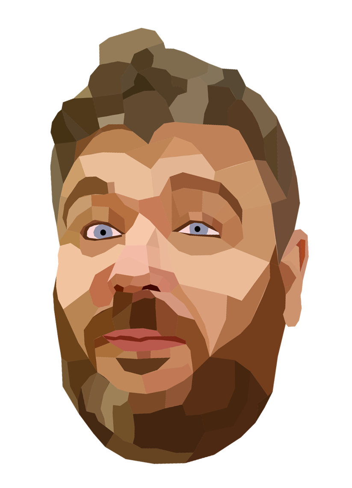

Agent pipeline design
Multi-agent pipelines built around the failure modes.
Routing, gates, budget caps, behavioural rules. The system knows what it's not allowed to do — not just the happy path.
// 01
Built fullstack systems in regulated pharma. Led the AI working group. Now I build the orchestration layer — the pipelines, the gates, the memory systems, the rules that keep autonomous agents on track.

Routing, gates, budget caps, behavioural rules. The system knows what it's not allowed to do — not just the happy path.
Led the AI working group in a GAMP 5 regulated pharma environment. Validated systems, full documentation trail. I know what it means to build AI that works inside compliance constraints — not just around them.
Angular, .NET, Python, Docker, Terraform, Azure. Not a specialist who hands off at the edge of their lane.
An autonomous multi-agent build pipeline. Specify a project. Walk away. Return to working software.
LangGraph orchestrates the agents. n8n handles the infrastructure. Archie — the Architect — sits at the centre, holds the context, and decides what the agents are and aren't allowed to do.
This portfolio was built using AppFactory. That felt like the right way to demonstrate it.
Explore AppFactory →A recipe app with semantic search and AI image generation. Angular, .NET, PostgreSQL with pgvector. In production and in daily use.
The first project built through the multi-agent pipeline. AppFactory existed long before LangGraph — FamilyCookbook is what it produced.
An AI welfare adviser for the UK PIP disability assessment process. Delivered through Telegram. Domain knowledge injection, session continuity across gaps, safeguarding protocols.
Built from personal experience of the system.
An AI music teacher with longitudinal memory — daily check-ins, practice planning, a growing knowledge base. Can ingest and read sheet music as MusicXML.
Built on n8n, Claude API, mem0, and Qdrant. The memory layer is live. The web interface is in build.
Full-stack development at one of the UK's leading international development and relief charities.
Managed development delivery for EMVO — the European Medicines Verification Organisation — within a GAMP 5 regulated supply chain environment. Owned the full product lifecycle: roadmap, delivery, and full-stack implementation across Angular/Aurelia, .NET, Azure, Terraform, Azure Data Factory, CI/CD, and infrastructure. Managed and mentored a junior developer. Led the company AI working group. No narrow lane — from frontend to cloud infrastructure to regulated documentation.
Full-stack web development in PHP and JavaScript. Four commercial websites, SAP integration, ETL in SSIS. Broad commercial scope before moving into the .NET world.
Responsive websites and volunteer management software. The self-taught pivot to development made commercial.
Production engineering, aerospace design, science teaching, engineering management, technical sales. Non-linear by circumstance, systems thinking throughout.
My career has never been linear — but there's always been a thread.
I started work at the tail end of the first digital revolution. Taking paper job sheets and turning them into full ERP systems in automotive supply chain. Building lab test software in Lotus Approach so nobody had to get up at 3am to run titrimetric analysis on the factory floor. Writing a full CRM in Access for the spares and components department because the data deserved a proper system. These were always my favourite parts of every job. It just never occurred to me that being a developer was a thing I could be — until it was the only option left.
In 2013 I fell out of a loft. The resulting infection took two years to run its course, collapsed the bone, and ended in an amputation. Recovery meant a part-time BI role at a local council — low-level work, the right pace. But reducing the medication that kept the pain manageable brought anxiety that made leaving the house impossible. I stopped working. For a while I thought that was it.
Then the pandemic happened. No commute required. Nowhere to be. I started teaching myself to code — and found my true calling. Not a pivot, not a reinvention. A recognition. I'd been doing this, in pieces, across twenty years of other jobs. It just took a global lockdown to make it the whole thing.
I'm based in Lincolnshire and work remotely. I'm a left-side Syme amputee with chronic pain conditions — remote is the environment where I do my best work. For the right role I can make occasional visits, but day-to-day I work from home, and in practice that's made me a better engineer: self-sufficient, strong written communicator, and I ship without anyone looking over my shoulder.
I'm excited to be here again. The same energy I felt watching job sheets become ERP systems — I feel it now watching prompts become pipelines. AppFactory is just the latest version of what I've always done: writing systems so I don't have to.
The Pippa project exists because I've been through the PIP system myself. I know how hard it is. That's not background context — it's the brief.